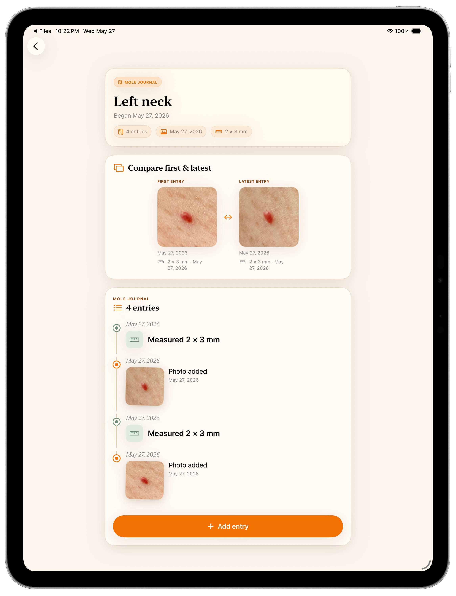
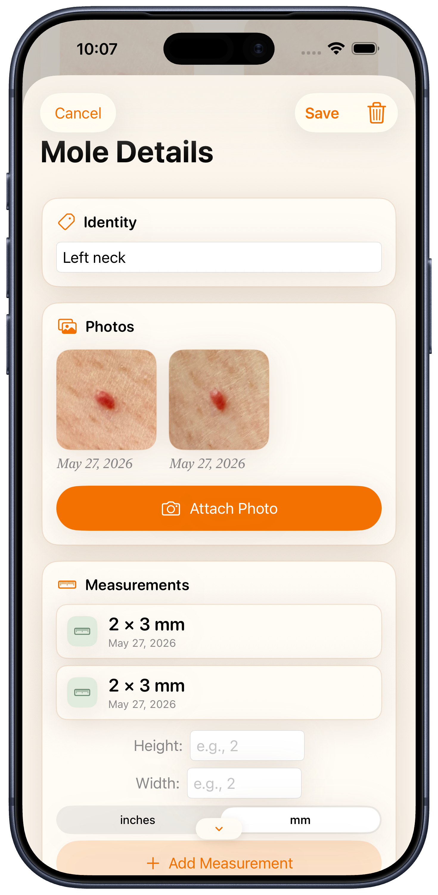
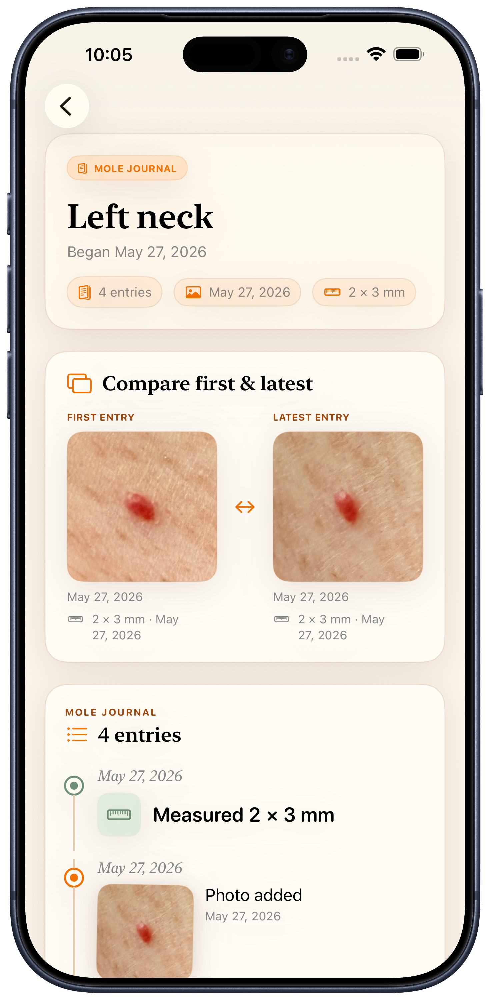
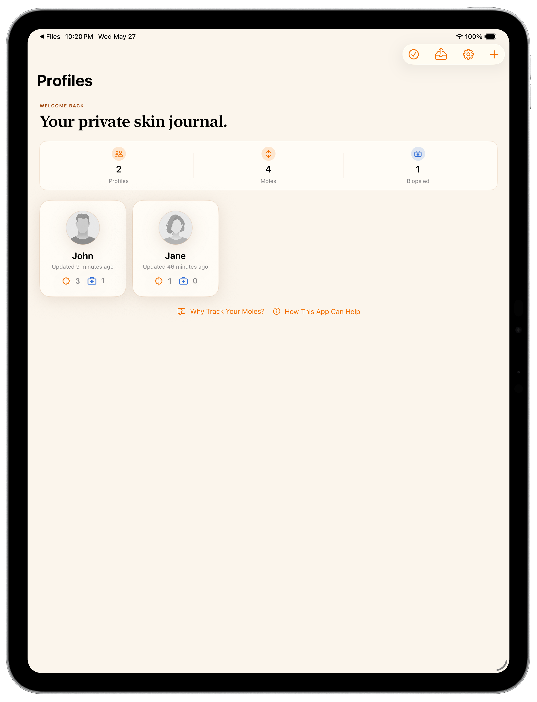
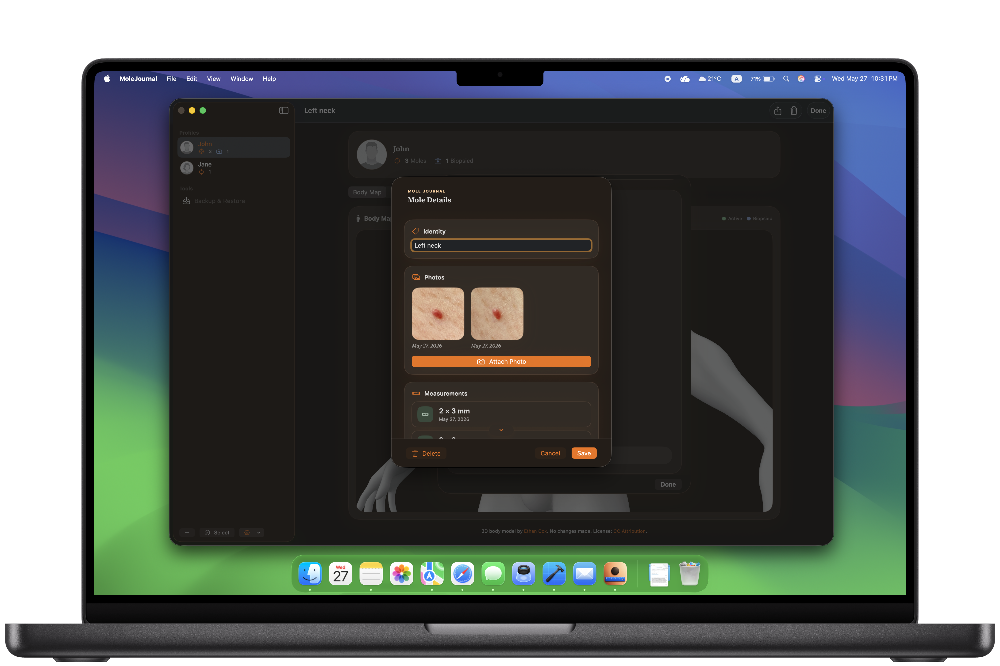
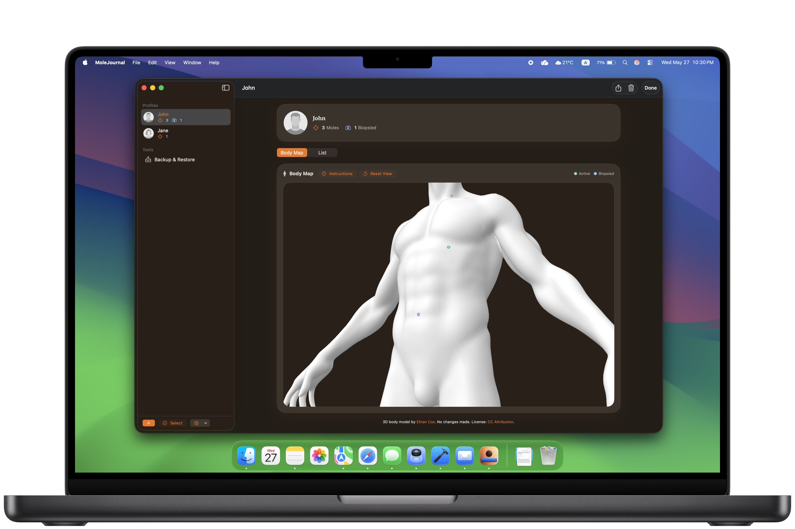
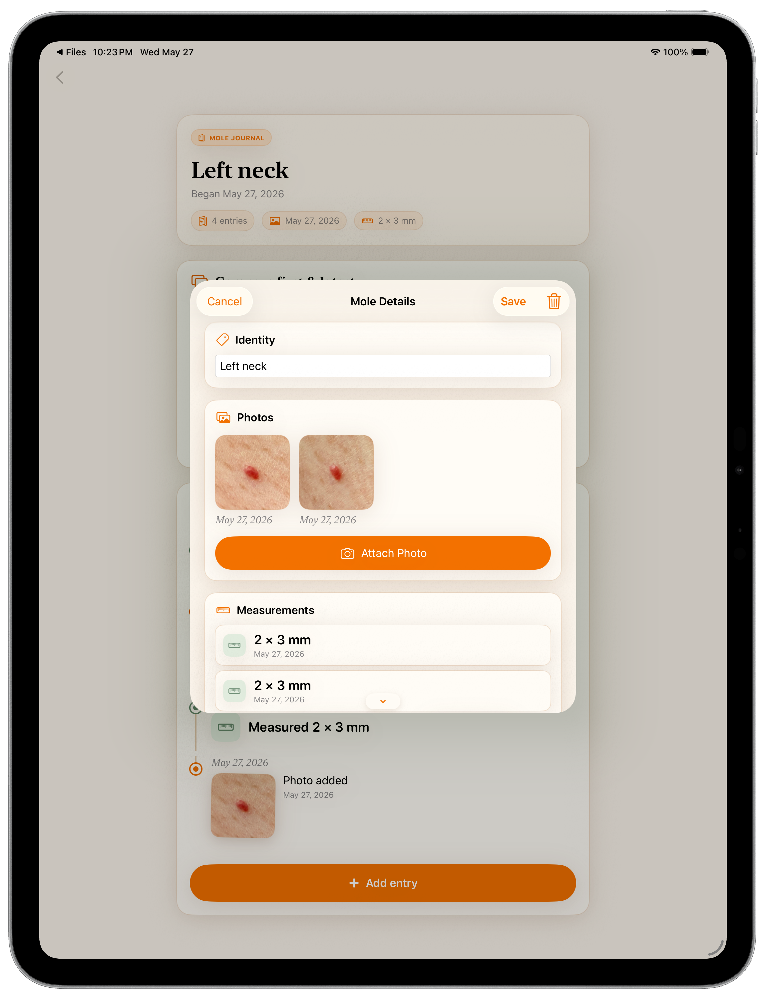

Private by design
Your mole journal belongs to you. MoleJournal stores records and photos on your device, with user-controlled backup export when you want an extra copy.
Private skin journal
A private journal for your skin records — keep dated photos, measurements, notes, and body locations organised on your own device.
Build a simple, dated record of moles over time. Add profiles, place each mole on a 3D body model, save photos and measurements, and keep notes together in one calm, easy-to-use app.
Your records stay on your device unless you choose to export a backup.
MoleJournal is for personal recordkeeping only. It is not a medical device, does not diagnose skin cancer or any other condition, does not analyze photos, and does not replace professional medical care. Contact a dermatologist or other qualified clinician for medical advice.


What it does
Instead of relying on scattered photos, memory, or handwritten notes, MoleJournal lets you create a profile, mark each mole on a body model, add dated photos, record measurements, and keep optional notes. Each mole gets its own timeline, so past entries are easier to review and compare over time.
Product preview




Why it helps
Mole records can be hard to keep consistent. Photos may end up in a camera roll, measurements may be written somewhere else, and body locations can be difficult to describe later.
MoleJournal brings those pieces together in a structured, visual format that is easier to maintain before a professional appointment or for your own personal history.
Designed around privacy and clarity
Your mole journal belongs to you. MoleJournal stores records and photos on your device, with user-controlled backup export when you want an extra copy.
Place mole markers directly on a 3D body model. It is a clearer, more natural way to remember location than flat diagrams or written descriptions alone.
MoleJournal uses a warm journal-style interface so recordkeeping feels simple, private, and approachable.
Keep dated photos, measurements, and notes together so each mole's history stays organised over time.
Use MoleJournal across iPhone, iPad, and Mac with a native interface designed for each screen size.
Create a backup file when you want an extra copy of your mole journal. Save it somewhere you trust and restore it later if needed.
Backup & restore
Because MoleJournal keeps data local, backups matter. The app includes backup export and restore tools so you can keep an extra copy of your records.
A backup file can include profiles, mole records, and photos. You choose when to create it and where to store it.
Your records live on your device, so keeping your own backup is the way to protect them if you replace or reset your device.

FAQ
MoleJournal is for personal recordkeeping only. It is not a medical device and does not replace care from a dermatologist or other qualified clinician.
Your profiles, mole records, measurements, notes, and photos are stored on your device. Orange Forge AI, LLC does not store your mole records or photos on its servers.
No. MoleJournal does not require an account or cloud profile.
Yes. MoleJournal lets you export a backup file that you control. You choose where to save it and whether to share it.
You can record mole locations, dated photos, measurements, notes, biopsy status, biopsy dates, and biopsy notes.
Contact a dermatologist or other qualified clinician for medical advice.
MoleJournal
Keep mole photos, measurements, notes, and body locations organised in one calm, on-device app. No account required.